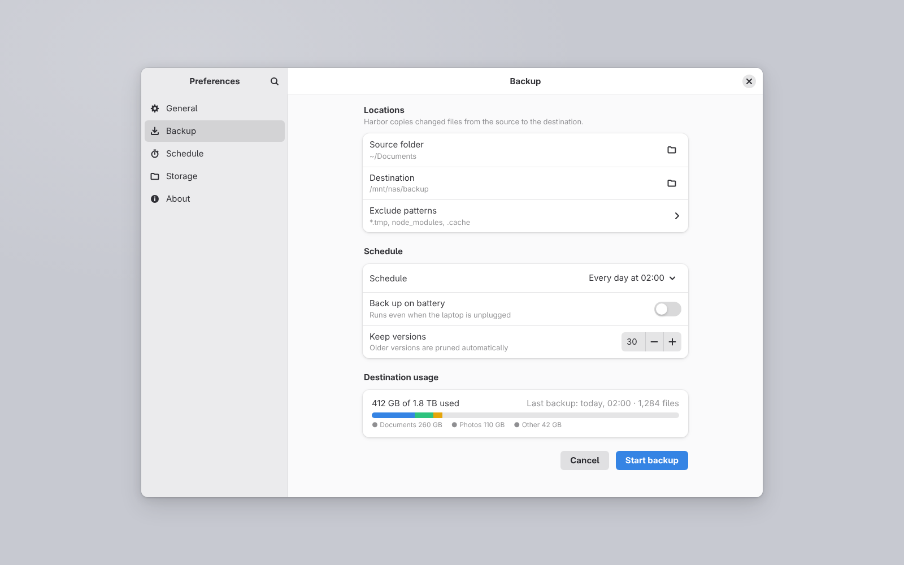
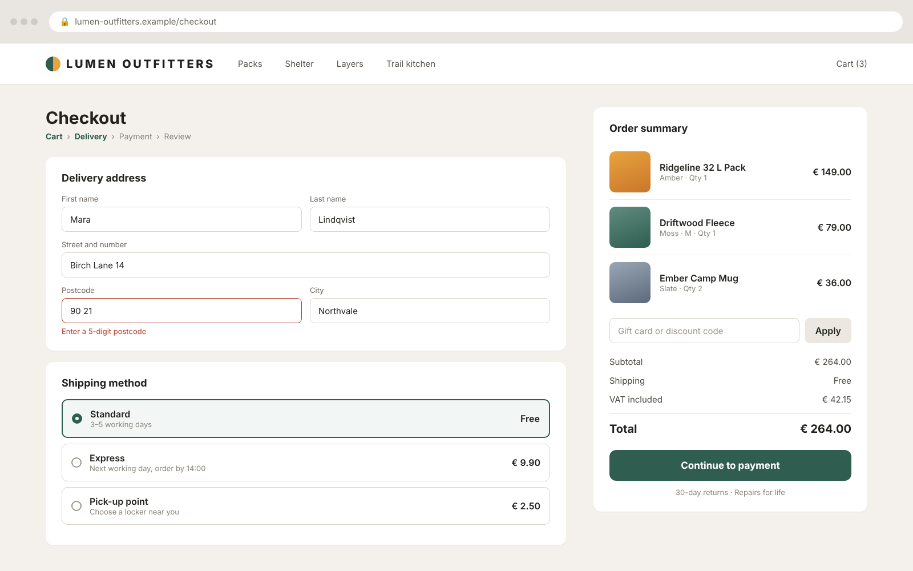

Desktop window chooser(GNOME, not drawn by Annota)
Waiting for a window…
Cancel
Esc Cancel
Waiting OSD — drawn by AnnotaShown from
Start until the chooser answers. Centred on the monitor under the pointer, like the countdown OSD (add-screen-capture 07). Non-modal: nothing is dimmed, the desktop stays usable. It is the chooser's parent window. Where GNOME puts the chooser is GNOME's choice — it may also cover the OSD.EndsA window chosen → OSD goes, then countdown (if a delay is set) and frame. Cancel, Esc or the chooser reported closed → OSD goes, session closed, nothing shown.